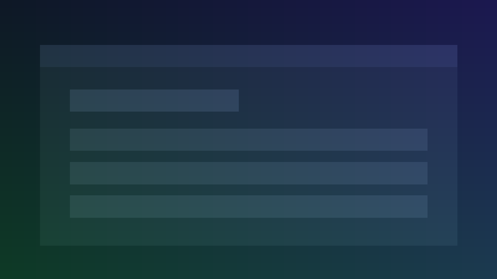

Stop repeating yourself to AI
Your conversations are saved in the background while you work. When you need an old answer, it’s already there. No exports, no copying, no starting from scratch.
Now in early access
Find any answer, prompt, or idea you’ve ever got from AI. LLMnesia indexes your conversations across ChatGPT, Claude, Gemini and more, so nothing disappears into chat history.
If you use AI daily, your conversations contain real work: research, decisions, code, strategies, ideas, prompts. But today, it all disappears into endless chat threads across different tools.
Search across:
LLMnesia is for founders, developers, researchers, writers, and builders. Anyone who uses AI daily and needs their conversations to become long-term knowledge instead of disposable chats.
If you use multiple AI tools every week and you’ve felt the cost of lost context, this is built for you.
One extension, one search box—every AI conversation you’ve had, at your fingertips.
Your conversations are saved in the background while you work. When you need an old answer, it’s already there. No exports, no copying, no starting from scratch.
Search across ChatGPT, Claude, Gemini and more from one place. Results appear instantly because everything lives on your machine.
Don’t just find the conversation. Jump straight to the specific message you need. No scrolling through hundreds of replies.
Export and back up your full conversation history. Your AI work stays yours, even if you switch tools or browsers.
Hit a keyboard shortcut and the search bar appears right where you are. Find what you need and get back to work in seconds.
Everything is stored locally on your device. No cloud, no accounts, no data collection. Delete it all with one click.
“I used to waste 15 minutes hunting for a prompt I wrote last week. Now I type two words and it’s right there.”
“I work with sensitive client data, so cloud tools were off the table. LLMnesia keeps everything in my browser—I search freely without worrying.”
“I jump between ChatGPT and Claude constantly. Finding an answer from one platform while inside the other has saved me hours.”
Your data lives in your browser—nowhere else.
Nothing is uploaded, synced, or sent to the cloud.
Export or delete everything with one click.
Most knowledge tools ask you to save, tag, and organise information manually. Most people never stick with them.
LLMnesia is different. It runs in the background and indexes your AI conversations automatically.
No setup. No tagging. No organising. It just remembers.
Picture a single search box that reveals results from ChatGPT, Claude, Gemini and more—all in one place. Type a few words, see matching conversations instantly, and click to jump straight to the message you need.

One search box. Every AI platform. The exact message.
I use AI every day across multiple tools. I kept losing useful prompts, answers, and ideas across ChatGPT, Claude, and Gemini threads. I’d know I’d already solved something but couldn’t find it. So I built LLMnesia to fix it for myself. Now I want to see if it helps other people too.
— Keiran
No. Everything is stored locally in your browser. LLMnesia never sends your conversations, search queries, or any personal data to an external server. Your data stays on your device, period.
When you visit a supported AI chat platform, LLMnesia quietly reads the conversation on the page and saves a searchable index in your browser’s local storage. It runs in the background so you never have to do anything manually.
ChatGPT, Claude, Gemini, Perplexity, DeepSeek, Grok, Mistral, Kimi, Qwen, and Google AI Studio. We’re adding more based on user requests.
No. Indexing is lightweight and happens incrementally in the background. Most users don’t notice any difference in browser performance.
Yes, completely. You can clear all indexed data with one click from the extension settings. You’re always in full control of what’s stored.
Yes. You can export and back up your conversation history in a portable format that you own.
Browser extensions are typically disabled in incognito mode by default. You can enable LLMnesia in incognito through your browser’s extension settings if you choose.
Yes, LLMnesia is free during the beta. Founding users will get preferred pricing and early access to new features when paid plans launch.
Free during the beta. Founding users get preferred pricing and a direct line to shape what gets built next.
Join the BetaNo spam. We’ll only email you about early access and major updates.